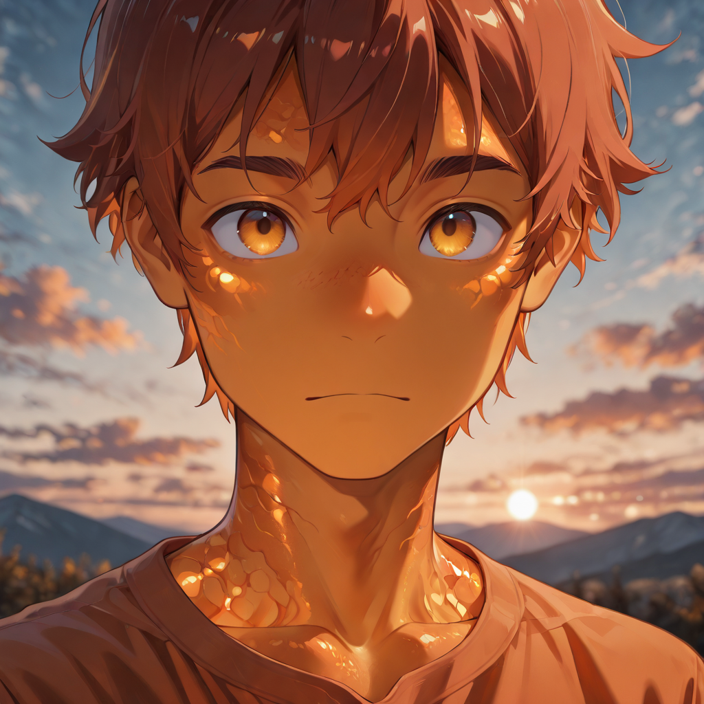

Fossilized Memory
Amber is tree sap that forgot it was alive. The Amber Casters were, in life, minor practitioners of earth magic with a specialty in the crystallization of natural substances , the production of hardened resins, the sealing of wounds with catalyzed sap, the preservation of organic material past its natural expiration. Modest magic. Useful magic. Deeply unglamorous.
The forest remembers them, even in death. The amber they once worked still responds to their presence , it materializes around their hands when they reach, coats their projectiles with a thick golden sheen, and hardens on contact with enemies in ways that slow movement and stick in the joints of armor. They are not powerful. They are the entry point. The formation begins with them.
They move faster than any other T1 unit in the Sentinelle branch because they do not stand still. They learned in their first lives that a stationary practitioner is a dead practitioner, and they carry that lesson into undeath with considerable conviction. The Noble does not need to tell them to reposition. They are already somewhere else.
Tactical Data

Amber Dart
BaseGallery
